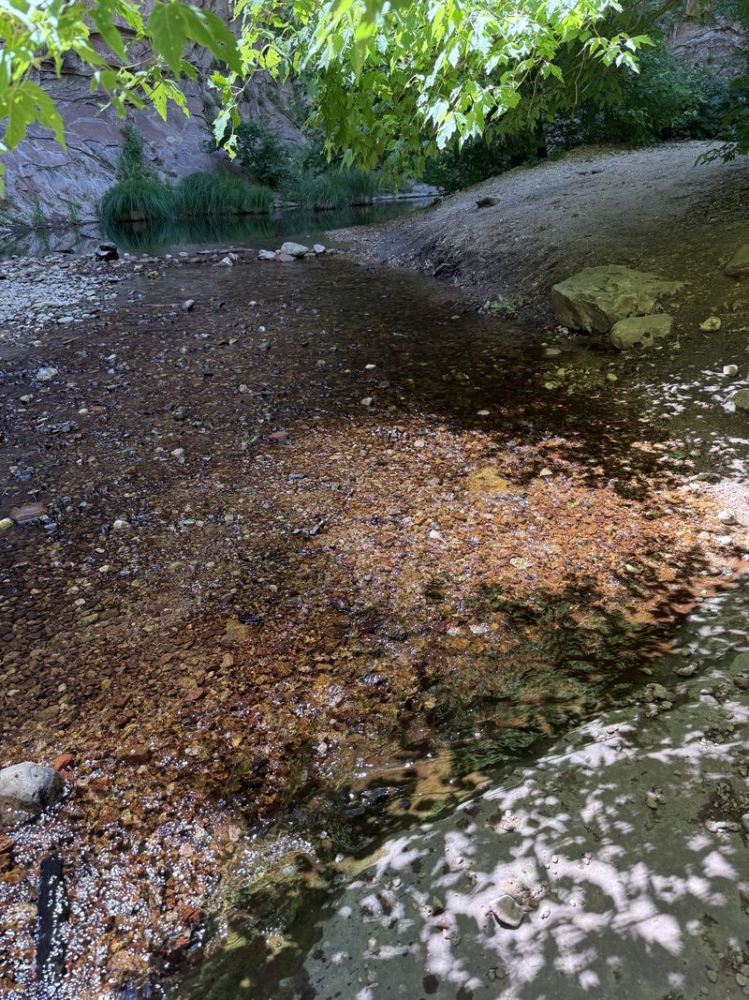
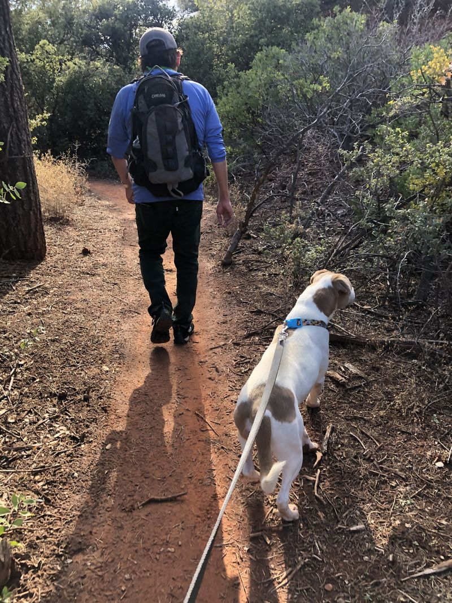
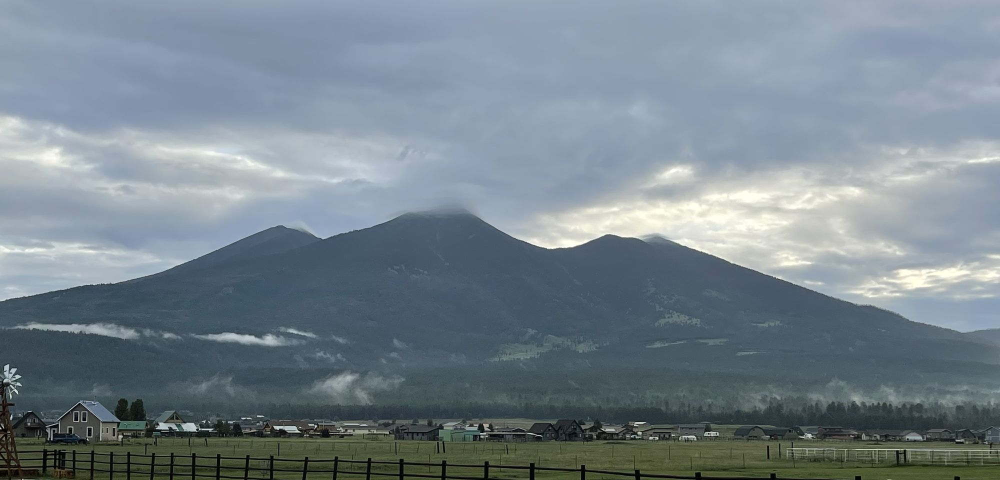
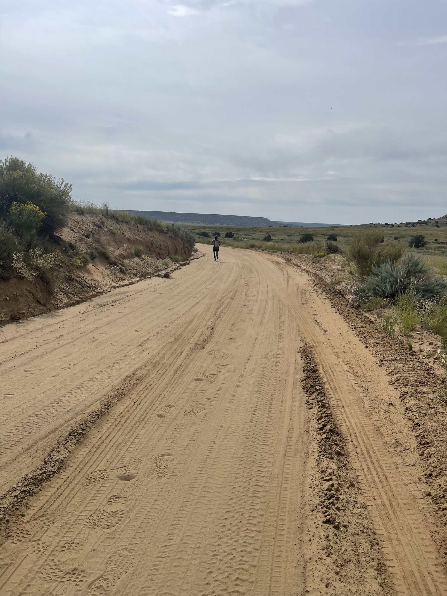
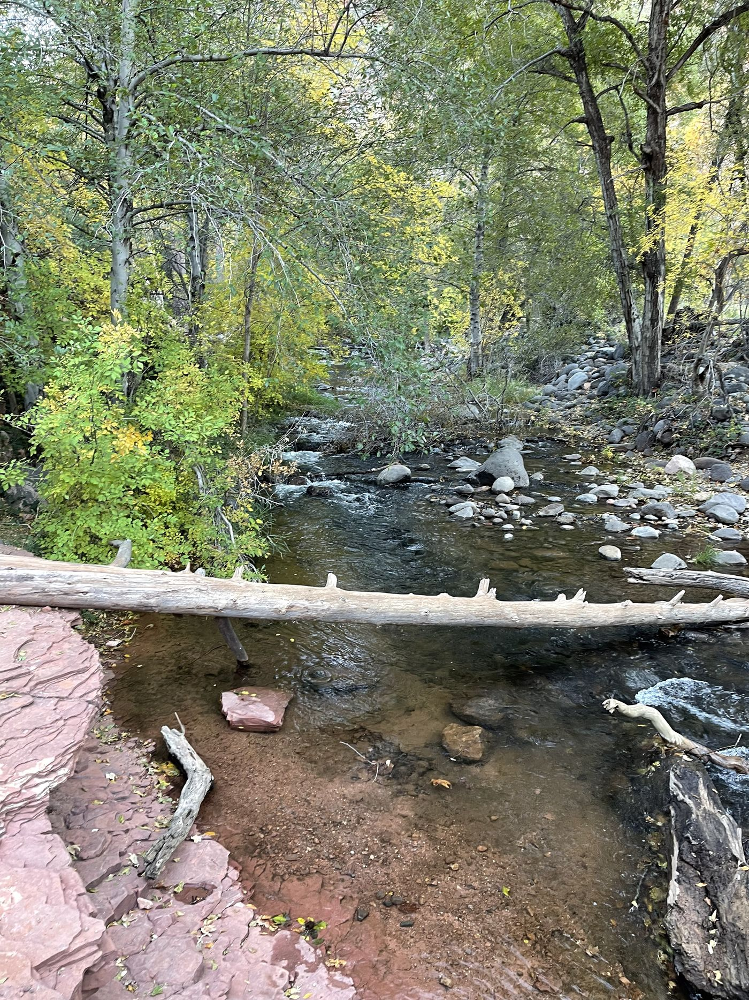

1
First light
Rise before the noise. Set the frequency before the day sets it for you. Name what is already given until the body believes it.
A meadow at 5:39 in the morning. The Peaks before the cloud lifts.
Morning · the dawn wind
Settle. Listen to the water.
The Practice
In four. Hold four. Out six. Hold four. Five rounds over the creek, with soft tones, then settle and listen to the water. One sitting a morning, and the path opens as you return.
Ninety seconds. Your sittings are kept in this browser only. I have already settled today →
Did your shoulders drop? The door is open.

No account. Your sittings are kept in this browser, and nothing is sold on the way. The gate is a threshold, not a lock: if you have already settled, walk through.

One breath, counted, by the creek. The stone breath, five rounds.
Opens with your first sitting
Seven mornings. The stone in the hand, the record of hard things you came through.
After seven mornings
A month of returning, several mornings a week. The eight weeks, one training at a time.
After a month
Held with others who kept the practice. The deep studies and the live voice.
When the crossing is heldLive it imperfectly and daily rather than perfectly and never. Four movements, the way the carriers kept them. Each one has its own ground and its own sound.

Rise before the noise. Set the frequency before the day sets it for you. Name what is already given until the body believes it.
A meadow at 5:39 in the morning. The Peaks before the cloud lifts.

Soften the eye when friction rises. Refuse overburden; hand one thing to the circle. One act of honor, daily.
Water over boulders in March. A runner on the sand road, carrying the next leg.

Three lines: what I carried, what I learned, whom I honored. Release the day's scarcity moment. Say it the other way.
The Pacific at 7:53 in the evening. The lake at 7:19, with the mountain gone dark.

One real circle or kin call. Hands on a craft. Hours on the land, no screen. One hour of deliberate nothing.
A hand on the wool. Hands at the braid.

The count stays the same: in four, hold four, out six, hold four. The creek is the same creek. What changes is you, a little, each morning.